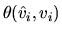
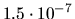

The singular value decomposition (SVD) of a
real m-by-n matrix A is defined as follows. Let
 .
The SVD of A is
(
.
The SVD of A is
(
 in the complex case),
where
U and V are orthogonal (unitary) matrices and
is diagonal,
with
.
The
in the complex case),
where
U and V are orthogonal (unitary) matrices and
is diagonal,
with
.
The  are the singular values of A and the leading
r columns ui of U and vi of V the
left and right singular vectors, respectively.
The SVD of a general matrix is computed by xGESVD or xGESDD
(see subsection 2.3.4).
are the singular values of A and the leading
r columns ui of U and vi of V the
left and right singular vectors, respectively.
The SVD of a general matrix is computed by xGESVD or xGESDD
(see subsection 2.3.4).
The approximate error
bounds4.10for the computed singular values
are
EPSMCH = SLAMCH( 'E' )
* Compute singular value decomposition of A
* The singular values are returned in S
* The left singular vectors are returned in U
* The transposed right singular vectors are returned in VT
CALL SGESVD( 'S', 'S', M, N, A, LDA, S, U, LDU, VT, LDVT,
$ WORK, LWORK, INFO )
IF( INFO.GT.0 ) THEN
PRINT *,'SGESVD did not converge'
ELSE IF ( MIN(M,N) .GT. 0 ) THEN
SERRBD = EPSMCH * S(1)
* Compute reciprocal condition numbers for singular vectors
CALL SDISNA( 'Left', M, N, S, RCONDU, INFO )
CALL SDISNA( 'Right', M, N, S, RCONDV, INFO )
DO 10 I = 1, MIN(M,N)
VERRBD( I ) = EPSMCH*( S(1)/RCONDV( I ) )
UERRBD( I ) = EPSMCH*( S(1)/RCONDU( I ) )
10 CONTINUE
END IF
For example4.11,
if
 and
and
| i | SERRBD | true | VERRBD(i) | true  | UERRBD(i) | true | |
| 1 | 21.05 |  | |||||
| 2 | 2.370 |
|
|||||
| 3 | 1.143 |
|
|